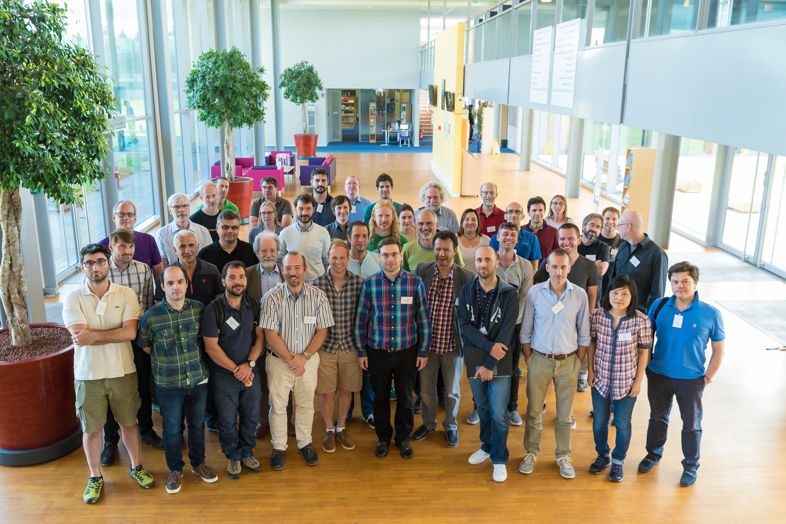

10th. MXCuBE meeting @ SOLEIL (Saint-Aubin, France), 12-14.06.2017

Status reports
ESRF
EMBL
ALBA
MAX IV
Soleil
HZB
Elettra
GPhL
DESY
MXCuBE : Past, present and future
Hardware integration
Matias GUIJARRO - FlexHCD Sample changer integration
Martin Savko - Optical recognition of samples in cryogenic dewars
Michael Hellmig - Integration of the GROB into BL 14.2 beamline
Last developments
Ivars Karpics - Qtx GUI: current status and latest developments
Jie Nan - Users interfaces Last developments of v2/v3
Olof Svensson - Pipelines at ESRF
Rasmus Fogh - Third party control of an experiment via MXCuBE
Marcus - MXCuBE3@ESRF
Ivars Karpics - Embedding state persistence and user guidance in MXCuBE